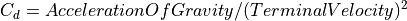

AFSIM Documentation Standard¶
This standard is a component of the Documentation Guide. It defines rules and guidelines to which AFSIM documentation should adhere.
This standard details markup, code instructions that may be used throughout the AFSIM Documentation’s reStructuredText files to render constructs in the generated output. For the purposes of AFSIM Documentation, constructs are the result of processed markup.
Markup is available through the following sources, and processed by those sources’ respective generators:
Type |
Generator |
Dependencies |
|---|---|---|
ReStructuredText Markup |
docutils |
python |
Sphinx Markup |
sphinx-build |
docutils |
AFSIM Markup |
various |
sphinx-build |
AFSIM capability is vast, thus the associated documentation is also vast. A Common Standard is defined which generally governs all AFSIM documentation. However, due to the variety of capability across AFSIM, more specific rules and guidelines are defined categorically, to provide specific guidance based on the nature of the documentation being created.
Contents
Common Standard¶
Sphinx recognizes the full restructuredText (RST) base markup as defined in docutils, the reStructuredText authoritative document.
Sphinx also includes enhanced markup constructs by default. For enhanced markup, Sphinx publishes and updates the authoritative document.
These enhancements are further expanded by AFSIM Sphinx Extensions. For the additional markup provided by these extensions, this standard is the authoritative document.
ReStructuredText and Sphinx offer wide syntactic flexibility for most markup, such that the end user of these tools is afforded the freedom to choose the syntax best suited to their purpose, organization, and/or project.
This standard defines a preferred subset of the available markup syntax, provided by the aforementioned tools, and the expanded markup available through custom Sphinx extensions.
To maintain flexibility and ensure that this standard does not invalidate the syntax used for markup in existing documentation, the following rules apply:
For all existing AFSIM Documentation, the syntax used for a newly added markup element should follow the existing syntax within a given document, if available.
If a new markup element is to be introduced to an existing document, or new documentation is being authored, the author should first refer to this standard.
Tip
On the sidebar, click This Page > Show Source to view the RST used to generate the current page.
Not all ReStructuredText and/or Sphinx markup elements are mentioned in this standard. Elements not covered by this standard may also be used, and their usage should follow the recommendation provided by the most recent authoritative document.
Sections¶
Titles
Page and section titles are created when a line of text is followed by a line of specific characters. Sphinx dynamically determines what character represents a given section level on a per-page basis.
Therefore, deeper sections (sub-sections) are created when a new symbol is used for a title in a given document.
ReStructuredText allows many unique characters to be used for this purpose (multiple syntax), however for AFSIM Documentation, Page Titles, Section Titles, and Sub-Section Titles will adhere to the convention provided in the example below.
Markup |
Result |
|---|---|
Page Title
==========
Section Title
-------------
Sub-Section Title
"""""""""""""""""
Sub-Sub-Section Title
'''''''''''''''''''''
Sub-3-Section Title
^^^^^^^^^^^^^^^^^^^
Sub-4-Section Title
~~~~~~~~~~~~~~~~~~~
|
Page Title Section Title Sub-Section Title Sub-Sub-Section Title Sub-3-Section Title Sub-4-Section Title |
A page title should appear at the beginning of each .rst document. In general, each document should feature a single page title. Sections, and first level sub-sections feature a page-spanning underline, and are collapsible. Deliberate selection of section depth for a given subject is important to ensure separations in a document are logical and consistent.
Note
Sub-sections beyond a depth of four are not supported. Lists, Topics, or Transitions may serve as suitable alternatives to greater section depth.
Any number of Sections, and/or sub-sections may appear in a single document, as long as the content of the sections relate to the page title. However, it is recommended that for a given document, sections are uniquely named.
Note
This applies for sections included through the .. include:: directive. See Include for more information.
Table of Contents¶
A local table of contents may be created via the .. contents:: directive. A table of contents is shown at the top of this page.
Options
Field |
Argument |
Description |
Default |
|---|---|---|---|
:depth: |
<number> |
Number of section levels shown in the TOC
|
unlimited |
:local: |
no value |
Display only subsections of this section in TOC
|
no value |
:backlinks: |
“entry” | “top” | “none” |
Adds backlinks from section headers to TOC
“none” should be used to disable this feature
|
“entry” |
Topics¶
A topic contains a body of closely related elements. Topics are normally brief and self contained. A topic may be an effective alternative to further sub-sections, and may be used to clearly separate a short block of documentation from the surrounding page. Unlike sections, it is acceptable for multiple topics to share the same name in a given document. However, multiple topics sharing the same name should not appear within the same section. Topics are not allowed within other body elements.
Tip
To generate a topic without a title, simply provide the escape character \ in place of a title.
Markup |
Result |
|---|---|
Topic
.. topic:: Topic Title
Indented content is in the topic body.
Dedented content will end the topic.
|
Topic Topic Title Indented content is in the topic body. Dedented content will end the topic. |
Transitions¶
Transitions may be used between paragraphs to mark divisions in text, signaling a subject change or similar separation that is less significant than the separation created by topics or sections.
Markup |
Result |
|---|---|
Transition
Subject 1
****
Subject 2
|
Hint A transition is used above this table |
Links¶
Links (or hyperlinks) are used to connect a documentation element to another location (a target). Targets may be in other documents, the same document, or external.
Linking and cross-referencing are discussed in Documentation Linking.
Inline Markup¶
Inline markup is used to modify the format of specific words or symbols (elements). Only one markup may be applied to a given element at a time. (i.e. Nested markup is not allowed.)
Text Decorations
Markup |
Result |
|---|---|
*Italic Text*
**Bold Text**
``Monotype Text``
|
Italic Text Bold Text
|
Inline Markup should be used as follows:
Bold
Placing strong emphasis on a particular word in a sentence
When first defining a term that is not linked
Italics
Directory hierarchies and file names
Monotype
Small code references where a literal block is not appropriate
References to markup elements such as directives and roles
Inline references to a specific ASCII or Unicode character
Note
The list provided is not all inclusive, but seeks to offer examples of common usage. Any element may use inline markup as is necessary.
Explicit roles for inline markup exist, and should not be used for the markup mentioned above.
Scripts
Superscripts and subscripts are also inline markup elements; however, they are invoked with explicit roles.
Tip
Roles must be preceded and followed by white space. To render scripts without gaps, an escaped white space character (\ followed by space) is needed.
Markup |
Result |
|---|---|
X\ :sup:`2`
H\ :sub:`2`\ O
|
X2 H2O |
Lists¶
Bulleted Lists
When the order of items in a list is not important, the list should be bulleted using *. A blank line must precede a list.
Markup |
Result |
|---|---|
Bulleted List
* Point A
* Point B
|
Bulleted List
|
Enumerated Lists
For enumerated lists, prefer arabic numbers (i.e. 1., 2., etc.). If necessary, #. may also be used. Prefer explicit enumerations starting with 1..
Markup |
Result |
|---|---|
Explicit Enumerated List
1. Point 1
2. Point 2
Implicit Enumerated List
#. Point 1
#. Point 2
|
Explicit Enumerated List
Implicit Enumerated List
|
Sub-Lists
Sub-Lists should follow the rules provided for other Lists. A sub-list must be indented to match the indentation of the first non-whitespace character, after the list markup in the parent list. A blank line must precede a sub-list.
Markup |
Result |
|---|---|
Enumerated List with Sub-lists
1. Point 1
* Point 1.A
* Point 1.B
2. Point 2
1. Point 2.1
2. Point 2.2
|
Enumerated List with Sub-lists
|
Horizontal Lists
Horizontal lists contain a bulleted list, and construct it into a more compact list by distributing multiple items horizontally.
Markup |
Result |
||||
|---|---|---|---|---|---|
Horizontal List
.. hlist::
:columns: 4
* A
* B
* C
* D
* E
* F
* G
* ...
|
Horizontal List
|
Tables¶
Simple Table
Simple tables should be preferred over grid tables when possible.
Markup |
Result |
||||||||||||||||||
|---|---|---|---|---|---|---|---|---|---|---|---|---|---|---|---|---|---|---|---|
Simple Table
.. table:: OR Truth Table
===== ===== ======
Input Output
------------ ------
A B A or B
===== ===== ======
False False False
True False True
False True True
True True True
===== ===== ======
|
Simple Table
|
||||||||||||||||||
Grid Table
If a table is structurally complex, such that a simple table is insufficient, grid table markup may be used.
Markup |
Result |
|||||||||||||
|---|---|---|---|---|---|---|---|---|---|---|---|---|---|---|
Grid Table
+------------+------------+-------------+
| Header 1 | Header 2 | Header 3 |
+============+============+=============+
| Row 1 | Column 2 | Column 3 |
+------------+------------+-------------+
| Row 2 | Cells may span columns |
+------------+------------+-------------+
| Row 3 | Cells may | * Cells may |
| | span rows | * contain |
+------------+ | * blocks |
| Row 4 | | |
+------------+------------+-------------+
|
Grid Table
|
|||||||||||||
List Table
In instances where a table is complex and/or requires the use of literals, or other multi-line constructs, a list table may be preferred.
Markup |
Result |
||||
|---|---|---|---|---|---|
List Table
.. list-table::
:header-rows: 1
* - **Markup**
- **Result**
* - ::
Example Markup
- Example Result
|
List Table
|
Options
Field |
Argument |
Description |
Default |
|---|---|---|---|
:align: |
“left” | “center” | “right” |
Horizontal table alignment |
“left” |
:widths: |
“auto” | “grid” | <integer list> |
A comma or space separated list of column widths. |
“auto” |
:width: |
<length> | <percentage> |
Forces table width to specified value |
none |
:class: |
“nowrap”
“align-top”
“header-text-center”
“cell-text-center”
“cell-text-right”
“margin-wide”
“example-rst”
“option-table”
|
Cell text will not wrap
Cell text is top aligned
Header text is center aligned
Cell text is center aligned
Cell text is right aligned
Cell content has a wider margin
Style class to show RST examples
Style class to enumerate options
|
wrap
middle
left
left
left
compact
NA
NA
|
Tip
The .. table:: directive, while optional for simple tables and grid tables, is necessary if the developer seeks to name a table, or to provide it with options.
Admonitions¶
Admonitions denote important information to the user and/or developer.
For each construct, the following rules apply:
Indentation must be uniform for every line of content, minimum one level of indentation.
Content should begin on the same line as the invocation, and must be followed by at least one empty line (prefer one empty line).
Notes
Markup |
Result |
|---|---|
Notes
.. note:: Single line note.
.. note:: Long note. Subsequent lines
are indented.
|
Notes Note Single line note. Note Long note. Subsequent lines are indented. |
Tips & Hints
Markup |
Result |
|---|---|
Blue Admonitions
.. tip:: Tips work similarly.
.. hint:: Hints are sometimes necessary too.
|
Blue Admonitions Tip Tips work similarly. Hint Hints are sometimes necessary too. |
Important & Attention
Markup |
Result |
|---|---|
Yellow Admonitions
.. important:: It's what you are!
.. attention:: Hey! Listen!
|
Yellow Admonitions Important It’s what you are! Attention Hey! Listen! |
Deprecated
The .. deprecated:: directive is reserved for documenting deprecated AFSIM features including commands, models, and script classes. The version number in which the feature is deprecated should appear on the same line as the directive. Other relevant information may be included to direct the user to alternative and/or replacement features. Any subsequent information must be uniformly indented and include Links to alternatives where applicable.
Markup |
Result |
|---|---|
.. deprecated:: 2.2.0
This will be removed in a future release.
|
Deprecated since version 2.2.0: This will be removed in a future release. |
Danger & Warning
Markup |
Result |
|---|---|
Red Admonitions
.. danger:: It's dangerous to go alone! Take this.
.. warning:: Warnings should be used wisely.
|
Red Admonitions Danger It’s dangerous to go alone! Take this. Warning Warnings should be used wisely. |
Other Admonitions
Sphinx also supports the generic .. admonition:: directive. Unstyled, generic admonitions are constructed without a border or background color, but generally look like other admonitions, and should be avoided in favor of built-in or AFSIM styled admonitions.
Markup |
Result |
|---|---|
Other Admonitions
.. admonition:: Admonition
Generic admonitions are not styled.
|
Other Admonitions Admonition Generic admonitions are not styled. |
Literal Blocks¶
With the exception of parsed literal blocks, the content of a literal block is not parsed/interpreted by Sphinx during the documentation build. Given that fact, literal blocks offer the developer an effective means to present syntactically significant content to the user, or another developer.
Basic Literal Blocks
Literal blocks may be invoked in a number of forms:
Expanded Form: Used when there is no logically-continuous content preceding the block.
Fully Minimized Form: Commonly used when the content of the preceding paragraph is logically continued by the literal block.
Note
The
::at the end of the invocation line will appear as a single:in the output.
Partially Minimized Form: Uncommonly used, but preferred when use of a
:to punctuate the preceding content is not desirable/appropriate.
For all forms, the following rules apply:
Indentation must be uniform for every line of the literal content, minimum one level of indentation.
Block content must be preceded and followed by at least one empty line (prefer one empty line).
Markup |
Result |
|---|---|
Literal Blocks
Expanded Form
::
Literal Block Content
More Content
Fully Minimized Form::
Literal Block relating to previous content
Partially Minimized Form! ::
Literal Block
|
Literal Blocks Expanded Form Literal Block Content
More Content
Fully Minimized Form: Literal Block relating to previous content
Partially Minimized Form! Literal Block
|
Parsed Literal Blocks
Parsed literal blocks are used when the literal block construct is desired while preserving use of linking/cross-referencing, and other markup.
A Parsed Literal Block should not be used when a Literal Block is sufficient.
Markup |
Result |
|---|---|
Parsed Literal
.. parsed-literal::
Parsed Literal Blocks allow `Links`_ and **markup**.
|
Parsed Literal Parsed Literal Blocks allow Links and markup. |
Code Blocks¶
The .. code-block:: directive takes a programming language name as an argument, rendering a similar construct to a basic literal block, but with language specific syntax highlighting.
Markup |
Result |
|---|---|
.. code-block:: c++
using namespace std;
int main()
{
cout << "Hello World!" << endl;
return 0;
}
|
using namespace std;
int main()
{
cout << "Hello World!" << endl;
return 0;
}
|
Options
Field |
Argument |
Description |
Default |
|---|---|---|---|
.. code-block:: |
“c” | “c++” | “python” | “rest” | … |
Language, for syntax highlighting. |
config value |
:linenos: |
none |
Add line numbers in the code block. |
none |
:lineno-start: |
<number> |
The first line number of the block. |
1 |
:emphasize-lines: |
<number, number, …> |
Code lines to be highlighted. |
none |
:caption: |
<text> |
A caption for the code block. |
none |
:name: |
<text> |
A label for the block, for linking. |
none |
:dedent: |
<number> |
Indentation to be removed from the block. |
0 |
:force: |
none |
Ignore minor highlighting errors. |
none |
Line Block¶
Where explicit or non-standard line breaks and/or indentation are necessary, it is acceptable to use a Line Block.
This feature may be used to overcome the default behavior of generated text output, where a single newline is ignored, and multiple whitespace characters are condensed.
Markup |
Result |
|---|---|
Line Block
| Explicit indentation
| and line breaks are
| needed for this documentation
|
Line Block Explicit indentation
and line breaks are
needed for this documentation
|
Include¶
The .. include:: directive is used to include a separate file, inline, into the current file.
Include should be used sparingly. A stated purpose of ReStructuredText is that files using the standard are as readable in their unprocessed form (.rst) as they are when generated to other formats. Unnecessary or excessive use of the include directive results in documentation that is logically fragmented, making it more difficult to read and/or revise.
Files included using this directive should have the (.txt) extension, and care should be taken to ensure that sections contained within the included text file adhere to the convention established within the including file. See Sections for more information.
Markup |
Result |
|---|---|
Include
Content before include...
.. include:: includefile.txt
Content after include...
|
Include Content before include… Text Content within includefile.txt Content of included files may use ReStructuredText and Sphinx constructs such as Links and markup. This is an example Result. includefile.txt does not exist. Content after include… |
Images¶
The .. image:: directive may be used to include image files directly into the documentation.
The following rules apply:
Directive must be preceded by an empty line.
Options must be consistently indented.
Options
Field |
Argument |
Description |
Default |
|---|---|---|---|
:alt: |
<text> |
A short description, given when image can’t be displayed. |
none |
:height: |
<length> |
Desired image height. Combined effect with :scale: |
image height |
:width: |
<length> | <percent> |
Desired image width. Combined effect with :scale: |
image width |
:scale: |
<percent> |
Uniform scaling factor applied to the image. |
100% |
:align: |
“top” | “middle” | “bottom” |
Vertical image alignment. (Inline images only) |
“middle” |
:align: |
“left” | “center” | “right” |
Horizontal image alignment. |
“left” |
:target: |
<text link> |
Image becomes hyperlink reference. See Linking. |
none |
Figures¶
The .. figure:: directive is functionally similar to image, except that the included image may be followed by a caption, and/or a legend.
The following rules apply:
Directive must be preceded by an empty line.
Options must be consistently indented.
Figure caption must be preceded and succeeded by an empty line, and be a simple paragraph (Caption may be omitted by using
..in place of the caption).If used, the figure legend must be preceded and succeeded by an empty line, and occur after the figure caption.
Markup |
Result |
|---|---|
.. figure:: ../images/Splash_AFSIM-War_BW_Sm.png
:scale: 30%
Caption: AFSIM Warlock
|
Caption: AFSIM Warlock |
Options
Field |
Argument |
Description |
Default |
|---|---|---|---|
:align: |
“left” | “center” | “right” |
Horizontal figure alignment.
Allows image to float with adjacent text.
|
center |
:figwidth: |
“image” | <length> | <percent> |
Sets horizontal figure width.
Contained image is not affected.
|
varies |
:figclass: |
<text> |
Sets a class attribute on the figure itself |
none |
Tip
The .. figure:: directive supports all options of the .. image:: directive. These options (except :align:) are passed on to the contained image.
Note
Figure caption alignment is determined by the browser. Thus, it is unaffected by the :align: option.
Substitution¶
Substitution allows for complex elements or structures to be included inline without sacrificing flow or readability of the RST. A substitution block contains an embedded
inline-compatible directive (without the leading ..). Common usages include the directives .. image:: and .. replace::.
Markup |
Result |
|---|---|
Substitution
The |hourglass| represents time to arrival.
The |measure_tool| describes more icons like this.
.. |hourglass| image:: ../images/wkf_hourglass.png
:scale: 25%
:align: top
.. |measure_tool| replace:: :ref:`docs/wkf_plugin/wiz_map_display:Measure Tool`
|
Substitution The represents time to arrival. The Measure tool describes more icons like this. |
Math¶
The .. math:: directive may be used to describe mathematical formulae and similar ideas.
Markup |
Result |
|---|---|
Single Line Example
.. math::
C_d = AccelerationOfGravity / (TerminalVelocity)^2
|
Single Line Example  |
For inline mathematics, the :math: role may be used.
Markup |
Result |
|---|---|
Inline Math
The atmospheric structure model, or :math:`C_n^2`
|
Inline Math The atmospheric structure model, or |

{kind=link}
{kind=link}
Issue¶
Implemented by the AFSIM Sphinx Extension afsim-issue-role, the :issue: role supports external links from changelog Issue IDs to their external issue definition pages.
Markup |
Result |
|---|---|
Changelog
* Created AFSIM Documentation Standard. (:issue:`AFSIM-706`)
|
Changelog
|
This feature is implemented for AFSIM 2.8.0 and later. Earlier versions will not recognize this role.
Categorical Standards¶
The following categorical standards extend the AFSIM Documentation Standard:
Documentation in each category adheres to the rules defined in the associated standard, as well as the rules defined within the Common Standard.
When rules in a given categorical standard conflict with rules defined in the common standard, related documentation will adhere to the rules defined in the relevant categorical standard.
Comments¶
Comments are messages that appear only with the reStructuredText. They serve to provide additional detail to documentation authors, without creating unnecessary noise in generated output. Comments are created when a
..is given at the beginning of a line, preceded by a blank line, and followed only by text. Comments may span multiple lines, but subsequent lines must match the indentation of the first line.